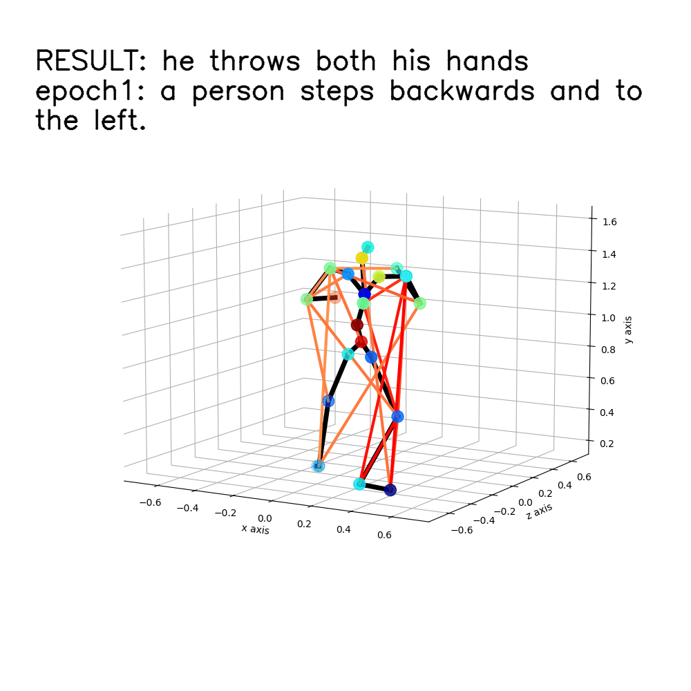
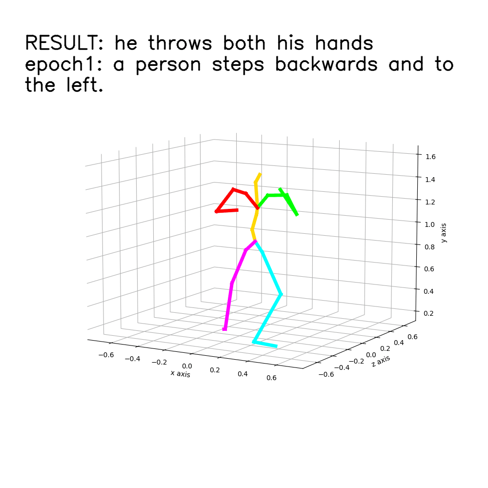
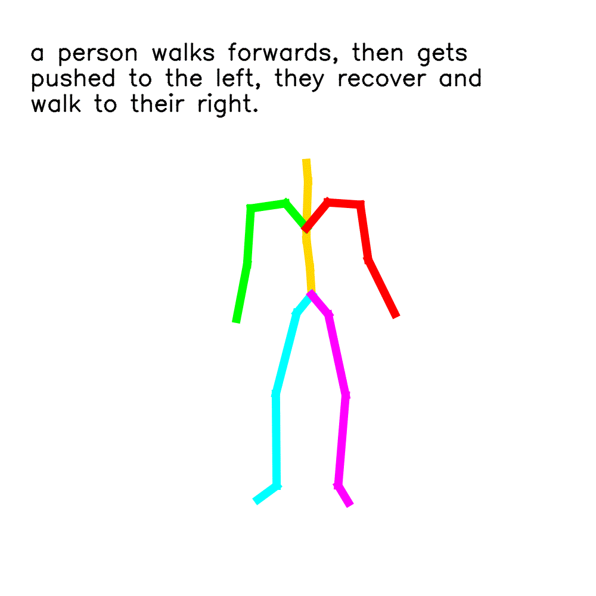
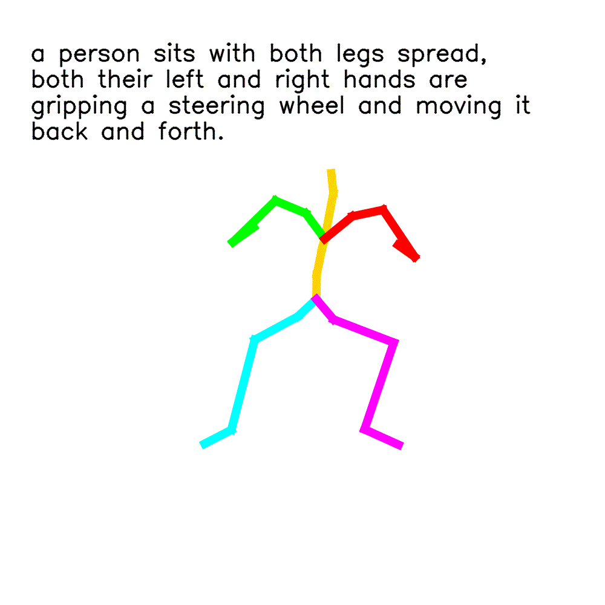
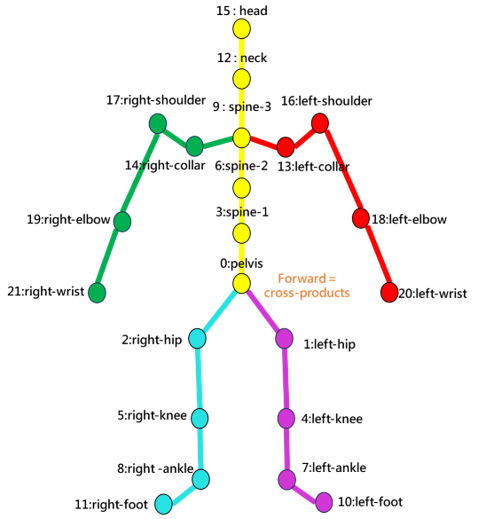
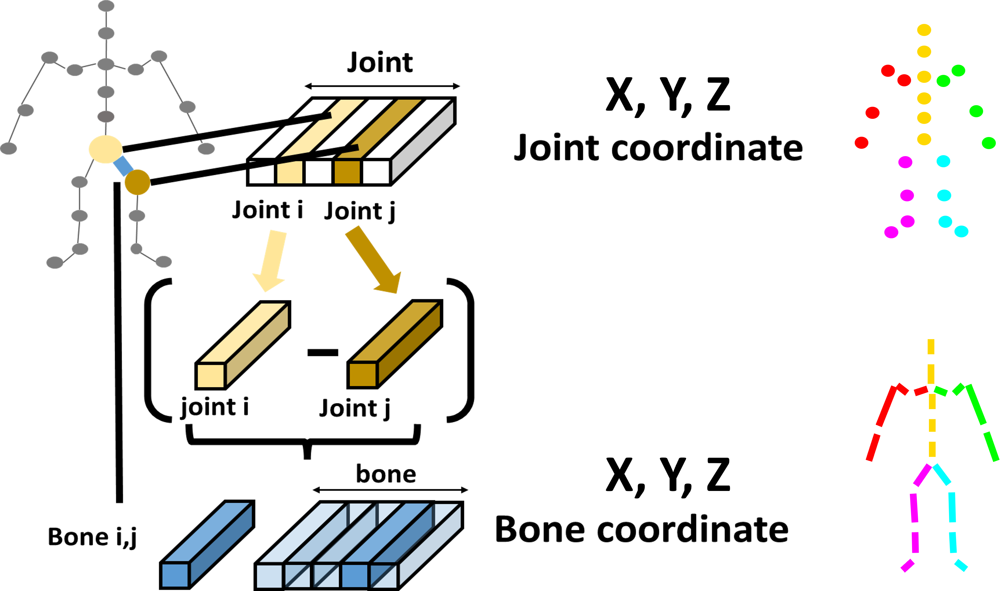
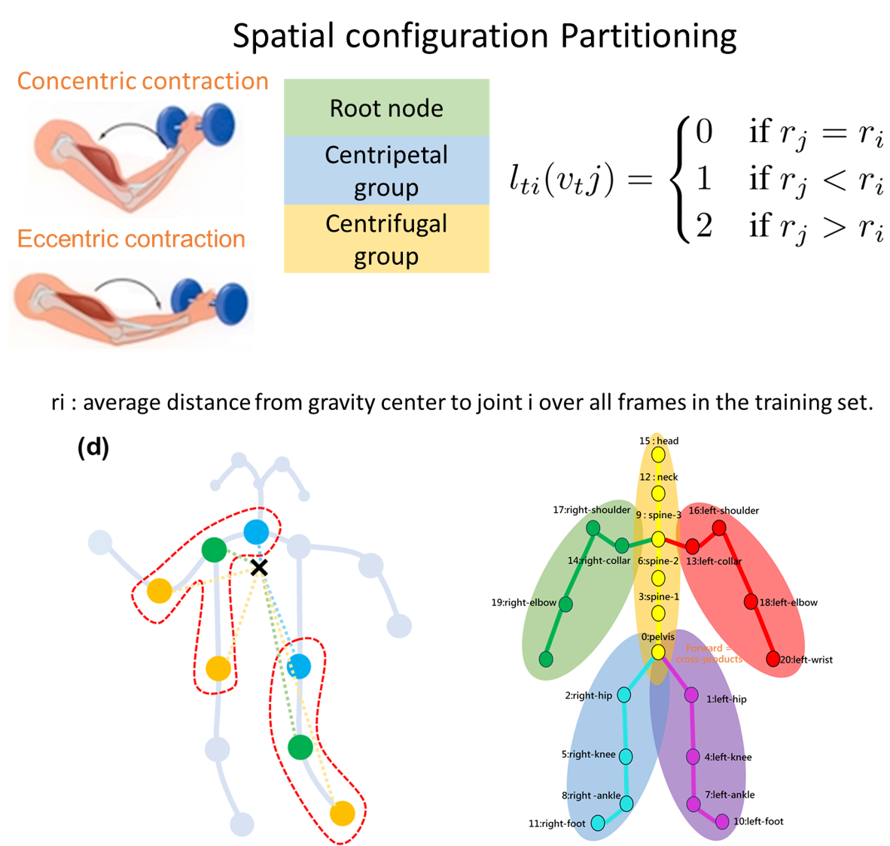

-
Attention Motion to Text
-


-
-
-
-
-
-
-
-
-
The relationship between vision and languages is important in our daily life. There are many researches concerning making computers to describe human actions such like Video Captioning, text to image or video. When it comes to human motion, there are fewer researches. The Task “Motion to description” is difficult, not to mention the task “Motion to detailed descriptions such as body parts”. Also, those researches about motion analysis mostly based on the joints connected with skeletons.
However, we think that the relationships between the disconnected joints are also important to motion analysis. Furthermore, movement of one part of the body that leads to a change in the overall posture, such as kicking with a leg to transition the entire body into an attacking stance. In order to consider such motion, the skeleton graph will need to consider the relationship between joints in different time.
| Dataset | Sequence Label | Motion | Features |
|---|---|---|---|
| HumanML3D | 44970(# words5371) | 14616(28.59 hours) | Text2Motion的model → 大量多變化的動作 |





”Decoupling Human and Camera Motion from Videos in the Wild”. They infer 3D human motion with a full scene reconstruction for in-the-wild-videos.
Their method robustly recovers the global 3D trajectories of people in challenging in-the-wild videos by predicting the camera intrinsic and extrinsic parameters and using the framework based on video(with temporal info).

| Step1 | Use the distance between right knee and right angle to scale every relative position of every joints. |
|---|---|
| Step2 | After calculate the forward vector of the whole body by outer product of the ”shoulder vector” and ”hip vector”, |
| Step3 | Use ”Inverse Kinematics” to calculates quaternion rotations for each joint to achieve the desired pose in Kinematics tree. |
| Step4 | Use ”Forward Kinematics” to accumulate rotations for each joint. |
| Step5 | Optical Flow → Joint displacement vector |



| top@1 | top@5 | |
|---|---|---|
| Spatial | 31.60% | 53.69% |
| Body Part | 32.29% | 54.71% |
